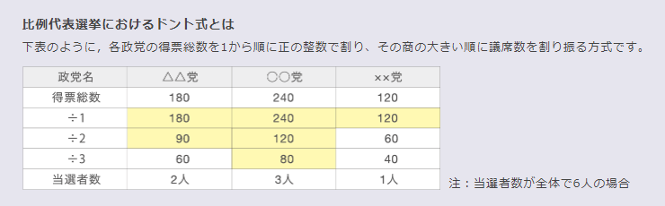

JavascriptでD'Hondt計算
Webプログラミング入門３章の３項のプログラミングの練習で、
ドント式計算をJavascriptで挑戦。
(テキストはnode.jsですが、ここのはJavascript使ってます。)
使用データ:
総務省「
第24回参議院議員通常選挙結果調
」

総務省HPより(
https://2019senkyo-sanin.go.jp/about/
)
成人式で配られたＤＶＤがひどい件